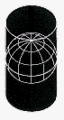
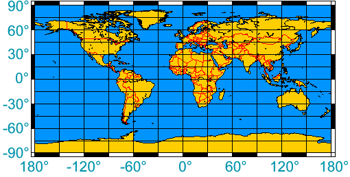

Sun Clock
About the Sun Clock
See at a glance who is in Day or Night, and follow the Sunset and Sunrise around the World.
Your device's local time is shown at the lower left corner, as well as "UTC" time (the '0' time at the center of map). The timezone bar has no adjustment for Daylight Saving Time.

About the Map
The Planet Earth's shape is similar to a Sphere, but maps are Flat.
Curved onto Flat doesn't quite work ...
... try wrapping a piece of paper around a ball!
So when we draw a map of the world we have to ask "how will I fit the shapes on the curved surface on to the flat surface?" This is called Projection, and every method of projection has its good and bad points.
For the Sun Clock we used a special type of Cylindrical Projection called Plate Carrée, or Equirectangular Projection, because it works a bit like an x-y graph (which made the mathematics a lot easier):
|  |
 |
(But it does make the land near the poles squashed-and-stretched, and countries near the equator look smaller than they should.)
Also check out World Time Zones.